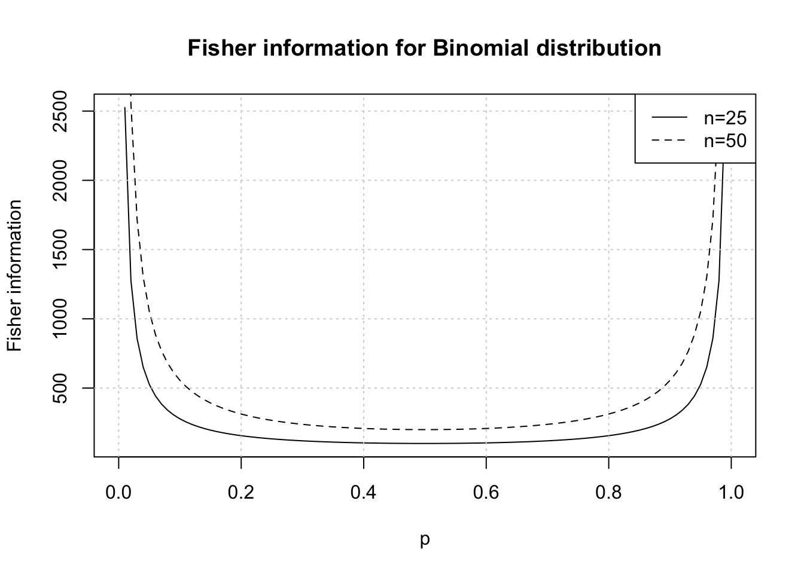
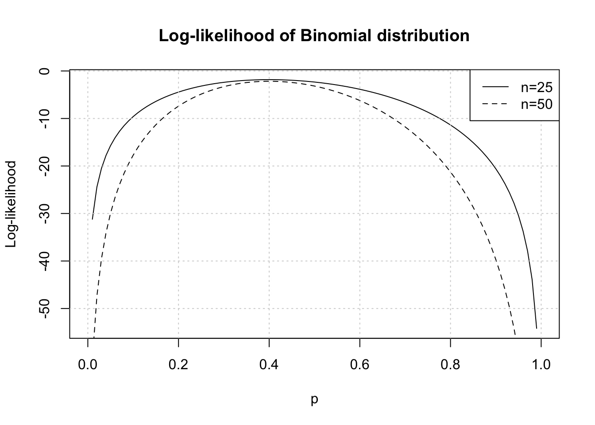

Introduction
Likelihood is a fundamental concept that plays a pivotal role in parameter estimation and model fitting.
Whether one is estimating the parameters of a simple distribution or building complex statistical models, likelihood functions provide a way to quantify how likely a set of observed data is, given specific model parameters.
In this post, I’ll break down the concept of likelihood, explore how it relates to probability, and demonstrate its application in parameter estimation using methods of Maximum Likelihood Estimation (MLE) and Newton Raphson.
This primer will help bring clarity to working with Likelihoods for parameter estimation.
The concepts discussed are deeply inspired by (Faraway 2016) and (George Casella 2002). For a more comprehensive understanding of the subject, I highly recommend reading the full texts.
Likelihood
Discrete RV case
If we consider there to be a set of independent discrete random variables \(Y_1,...., Y_n\) with probability mass function \(f(y|\theta)\) where \(\theta\) is the parameter.
Let \(\mathbf{y} = (y_1,....,y_n)^T\) be the observed values, then the likelihood function for the distribution is:
\[ P(\mathbf{Y}=\mathbf{y}) = \prod_{i=1}^{n} f(y_i|\theta) = L(\theta|y) \]
As can be seen likelihood is about considering parameter \(\theta\) as random and data \(\mathbf{y}\) as fixed (hence the notation \(L(\theta|y)\)). This is as opposed to a joint density function where \(\theta\) are fixed and \(y\) are random.
Effectively though likelihood is still the probability of observed data \(\mathbf{y}\) for a specified value of the parameter(s) i.e. \(p(\mathbf{y}|\theta)\) but the key distinction is that likelihood changes as \(\theta\) changes.
Continuous RV case
When the random variables are continuous (with probability density \(f(y|\theta)\)), in practice one can measure data with limited precision. When a value \(y_i\) is observed it effectively indicates an observation in the range \([y_i^l, y_i^u]\), where \(y_i^l\) and \(y_i^u\) are lower and upper bounds of precision limit.
Using which we can reason that probability of observed value is a concept defined over an interval:
\[ P(Y_i=y_i) = P(y_i^l<=y_i<=y_i^u) = \int_{y_i^l}^{y_i^u} f(u|\theta) \, du \approx f(y_i|\theta) \delta_i \]
such that \(\delta_i = y_i^u-y_i^l\), which does not depend on \(\theta\) and is related to the precision of measurement.
And, the likelihood becomes:
\[ L(\theta|y) \approx \prod_{i=1}^{n} f(y_i|\theta) \prod_{i=1}^{n}\delta_i \]
Given we know that \(\delta_i\) does not depend on \(\theta\), the last term can be ignored and the likelihood then becomes same as in the discrete case.
Binomial example
Let’s consider a binomially distributed random variable \(Y \sim B(n,p)\) (Note: here \(p\) is the parameter of interest).
Its likelihood is:
\[ L(p|y) = \binom{n}{y}p^y(1-p)^{n-y} \]
The maximum likelihood estimate (MLE) of \(p\) results in the largest probability of observed data. The value at which the maximum occurs is called the maximum likelihood estimate and is denoted as \(\hat{p}\).
Often, it is simpler to maximise the log of likelihood function \(l(\theta|y) = log(L(\theta|y))\), considering that log is a monotonic increasing function so maximising either should result in the exact same estimate \(\hat{\theta}\).
To find the solution for \(\hat{p}\) in our binomial case, we can start by defining the log-likelihood:
\[ l(p|y) = log(\binom{n}{y}) + ylog(p) + (n-y)log(1-p) \]
A typical calculus approach to maximising this function would be to take the derivative of this log-likelihood w.r.t. parameters of interest and set it to 0.
Worth noting that the derivative is called score function and denoted as \(u(\theta)\) in general. For binomial we have:
\[ u(p) = \frac{d}{dp}l(p|y) = \frac{y}{p} - \frac{n-y}{1-p} \]
To get the maximum likelihood estimate \(\hat{p}\) we solve for \(u(p) = 0\) and get \(\hat{p} = y/n\).
Fisher Information (uncertainty)
Some measure of uncertainty is desirable here to be able to rely on the estimate. This is given by Fisher information:
\[ I(\theta) = var(u(\theta)) = -\mathbb{E}[\frac{\partial^2}{\partial \theta \partial \theta^T}l(\theta)] \]
The double derivative part here implies the rate of change of score itself.
At (or near) the maximum values of score, a large value of \(I(\theta)\) effectively indicates a large rate of change of score. Which means that the maximum is well defined (curvature of score is large) which would indicate a high level of confidence in the estimate.
Under regularity conditions, the maximum likelihood estimator (MLE) of the parameter \(\theta\) , denoted as \(\hat{\theta}\) , is asymptotically unbiased and normally distributed. That is: \[ \hat{\theta} \sim \mathcal{N}\left(\theta, \frac{1}{I(\theta)}\right). \] and this means that \(var(\hat{\theta}) = I^{-1}(\theta)\). Which gives us the uncertainty on parameter estimate itself.
Fisher information for Binomial
Now, in the Fisher information, the expectation is w.r.t. data. Consider the following for binomial distributed data:
\[\begin{align} \frac{d}{dp}l(p|y) = \frac{y}{p} - \frac{n-y}{1-p} \\ \frac{d^2}{dp}l(p|y)l(p|y) = -\frac{y}{p^2} - \frac{n-y}{(1-p)^2} \\ \mathbb{E}[\frac{d^2}{dp}l(p|y)l(p|y)] = \mathbb{E}[-\frac{y}{p^2} - \frac{n-y}{(1-p)^2}] \\ and, \mathbb{E}[y] = np \\ \mathbb{E}[\frac{d^2}{dp}l(p|y)l(p|y)] = -\frac{n}{p} - \frac{n}{(1-p)} \\ I(p) = - \mathbb{E}[\frac{d^2}{dp}l(p|y)l(p|y)] = \frac{n}{p} + \frac{n}{(1-p)} \\ I(p) = \frac{n}{p(1-p)} \end{align}\]So, the larger the \(n\) (sample size) the greater is Fisher information and lesser uncertainty about the maxima point of score function. Similarly, for same \(n\) more extreme values of \(p\) will enable estimation of parameter with greater degree of confidence due to higher Fisher Information. Intuitively, this is because extreme values in data will be observed (lots of 1s or lots or 0s).
Effect of Fisher information on log-likelihood
We can also illustrate the effect on score (log-likelihood) becoming more defined with higher Fisher information (due to higher \(n\)) with same choices as above plot.
Essentially we consider 2 binomial datasets one with \(n=25, y=10\) and another with \(n=50, y=20\) where \(y\) is observed counts of successes.
loglik <- function(x, y, n) lchoose(n,y) + y*log(x) + (n-y)*log(1-x)
curve(loglik(x,y=10,n=25), 0,1, lty=1, xlab='p', ylab='Log-likelihood',
main='Log-likelihood of Binomial distribution')
curve(loglik(x,y=20,n=50), 0,1, add=TRUE, lty=2)
grid()
legend("topright", legend = c("n=25", "n=50"), lty = c(1,2))
The maximum can be noticed at \(p=0.4\) (equal to \(n/y\) in both cases as derived earlier). For larger sample size \(n=50\) the curvature is greater as there is more information in this case.
For our binomial example we maximised the log-likelihood function analytically earlier. It was a convenient exercise, however it is not always possible to analytically maximise log-likelihood and estimate parameters.
Numerical estimation
Typically numerical optimisation is necessary when estimating parameters using log-likelihood maximisation. The Newton-Raphson method is applied for these purposes. Consider \(\theta_0\) as an initial guess for \(\theta\), then an update is made using: \[
\theta_1 = \theta_0 - H^{-1}(\theta_0) J(\theta_0)
\] Where,
\(H(\theta) = \frac{\partial^2}{\partial \theta \partial \theta^T}l(\theta)\) is the Hessian matrix of second derivatives of log-likelihood w.r.t. \(\theta\) .
\(J(\theta) = \frac{d}{d\theta}l(\theta)\) is the Jacobian matrix of derivatives of log-likelihood w.r.t. \(\theta\) .
This method works well, provided the log-likelihood is smooth and convex around the maximum and the initial value is reasonably chosen, but is not a guaranteed solution for all maximisation problems (such as when maximum is on boundary of parameter space or when there are several local maximums).
Normal example
To develop intuition on this method consider a Normal distribution: \[ f(x \mid \mu, \sigma^2) = \frac{1}{\sqrt{2\pi\sigma^2}} \exp\left(-\frac{(x - \mu)^2}{2\sigma^2}\right) \]
Its log-likelihood can be written as \[ l(\mu) = -\frac{n}{2} \log(2\pi\sigma^2) - \frac{1}{2\sigma^2} \sum_{i=1}^n (x_i - \mu)^2. \]
We calculate the first and second derivatives of log-likelihood
\[\begin{align} l'(\mu) = \frac{\partial l(\mu)}{\partial \mu} = \frac{1}{\sigma^2} \sum_{i=1}^n (x_i - \mu) \\ l''(\mu) = \frac{\partial^2 l(\mu)}{\partial \mu^2} = -\frac{n}{\sigma^2} \end{align}\]Then we perform the Newton Raphson update
\[\begin{align} \mu^{(t+1)} = \mu^{(t)} - \frac{l'(\mu^{(t)})}{l''(\mu^{(t)})} \\ \mu^{(t+1)} = \mu^{(t)} - \frac{\frac{1}{\sigma^2} \sum_{i=1}^n (x_i - \mu^{(t)})}{-\frac{n}{\sigma^2}} \\ \mu^{(t+1)} = \mu^{(t)} + \frac{\sum_{i=1}^n (x_i - \mu^{(t)})}{n} \\ \mu^{(t+1)} = \frac{1}{n} \sum_{i=1}^n x_i \end{align}\]Thus, in this case, the Newton-Raphson method directly converges to the sample mean \(\bar{x}\) , which is the maximum likelihood estimate (MLE) for \(\mu\).
Binomial solution
Let’s now revert back to our Binomial distribution setting. We can perform log-likelihhod maximisation with Newton Raphson using R. Note that we need to minimize \(-l(\theta)\) because nlm minimizes and doesn’t maximize.
n <- 25
y <- 10
f <- function(x) -loglik(x, y, n)
mle <- nlm(f, 0.5, hessian=TRUE)Warning in log(x): NaNs producedWarning in nlm(f, 0.5, hessian = TRUE): NA/Inf replaced by maximum positive
valueWarning in log(x): NaNs producedWarning in nlm(f, 0.5, hessian = TRUE): NA/Inf replaced by maximum positive
valueWe use an initial value of \(p=0.5\) and set hessian to TRUE to be able to calculate standard errors of the estimate using it.
At the MLE \(\hat{\theta}\) , the Hessian \(H(\hat{\theta})\) is often used as an estimate for the Fisher information. (since both are effectively double derivative of log-likelihood). We have \[ I(\hat{\theta}) \approx -H(\hat{\theta}) \] We have seen earlier that the variance of parameter is the inverse of Fisher information, which gives us \[ \text{Var}(\hat{\theta}) = I^{-1}(\theta) \approx [-H(\hat{\theta})]^{-1} \]
Hence, the inverse of the Hessian at the optimum is equal to the variance of the estimate.
Note: - sign is excluded since we’re working with -log-likelihood in nlm
cat(paste("Numerical estimate of p:", round(mle$estimate, 2)))Numerical estimate of p: 0.4est <- paste("Estimated variance of p:", round(1/mle$hessian, 4))
act <- paste("Actual variance variance of p:", round(0.4*(1-0.4)/n, 4))
cat(paste(est, act, sep='\n'))Estimated variance of p: 0.0096
Actual variance variance of p: 0.0096This is a useful toolkit to have when working with estimations and maximum likelihood.
Wrap up
By understanding these fundamental concepts, one can gain deeper insights into statistical inference and model fitting, helping to make more informed decisions in real-world applications.
References
Faraway, Julian J. 2016. Extending the Linear Model with r, Second Edition. CRC Press.
George Casella, Roger L. Berger. 2002. Statistical Inference, Second Edition. Cengage.